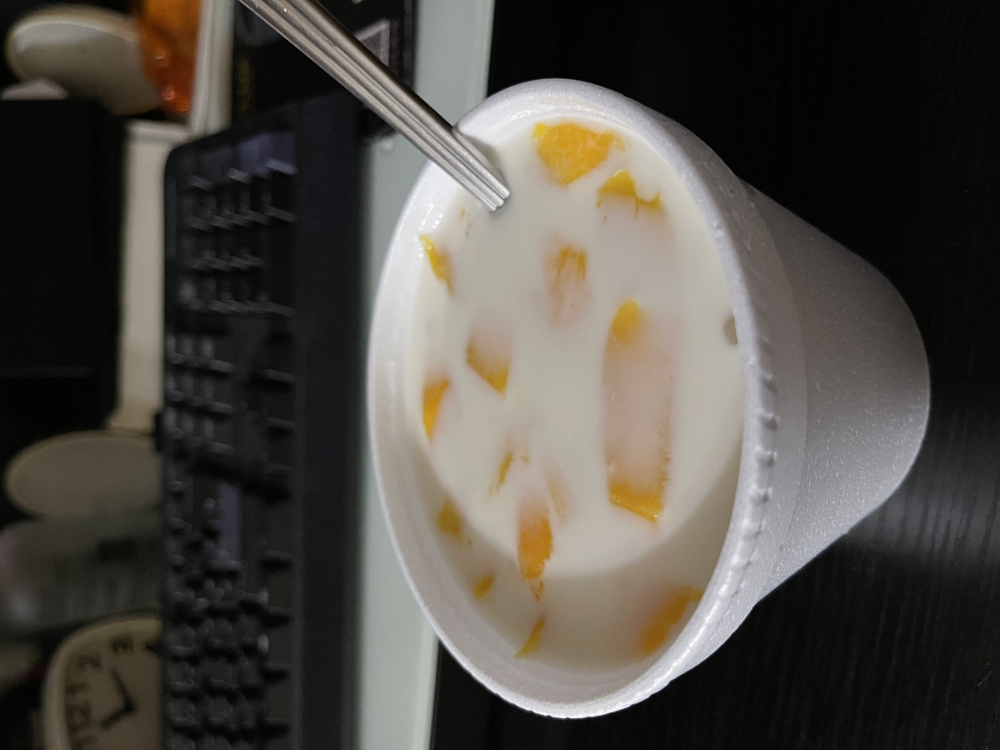
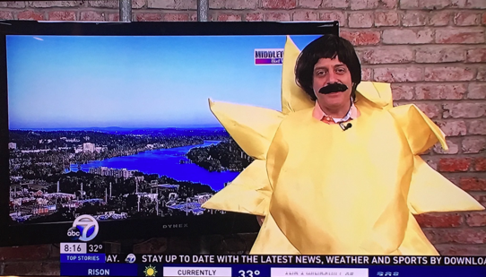
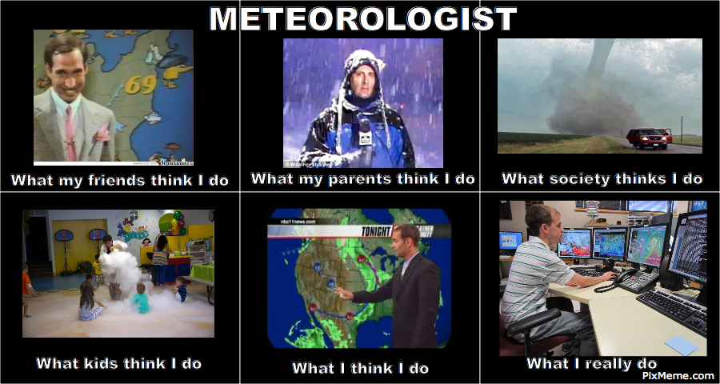
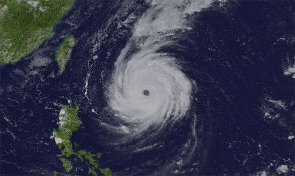
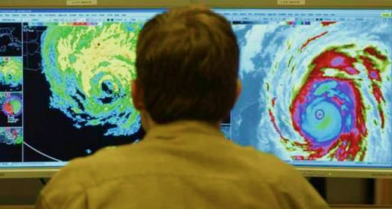
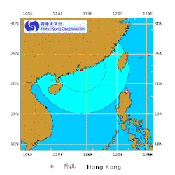

My name is Wong Po Hing (王寶慶), 20 years old, I study Computer Science in HKU SPACE
I want to introduce my favourite dog in this world^^
Her name is Saikwa and her breed is Bichon Frise!
Click the photo to learn more about Bichon Frise!
She loves steam chicken breast and sleeping on the pillow!
Click
here
to follow Saikwa and find how cute she is on Instagram!
My favourite dessert is Mango Sago with Coconut milk(芒果椰汁西米露) I tried all Mango Sago in Tseung Kwan O, I found the BEST Mango Sago is the stall where in Sheung Tak Night Market! It only costs $26 HKD! 
My dream is to be a meteorologist! meteorologist? what is this? this?

nah~~~~~ It should be like this Click the photo to find out what does a meteorologist do! 
When I was young, I watched the weather forcast in tv and amazed by the Satellite Imagery! I can see the cloud moving in the earth and have a BIG cloud, which is typhoon! I want to know how to predict the routine of typoon and more about the weather!
 
I joined the meteorological summer workshop last summer,
my group built a tiny MICRO:BIT air quality monitoring equipment and weather station to measure different information,
such as temperature, PM2.5, wind speed.
I gained more advanced knowledge to construct the data in different techniques
and realized the difficulties of predicting accurate weather during climate change.
I look forward to develop more accurate forecasting programs to minimize the casualty toll during increasing extreme climate events.
just like this~

Then I can make everyone go to work!